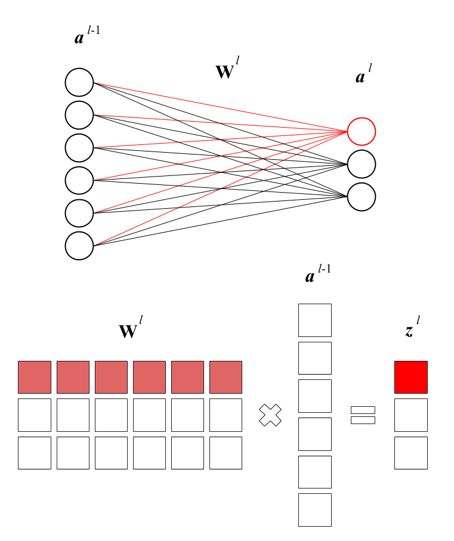
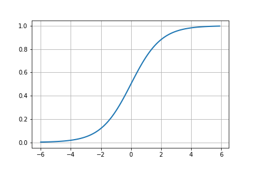
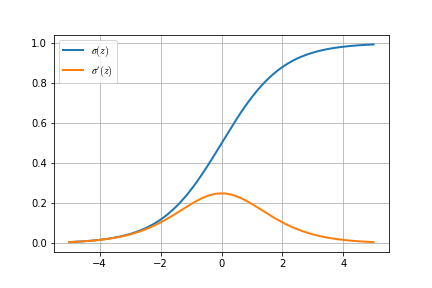
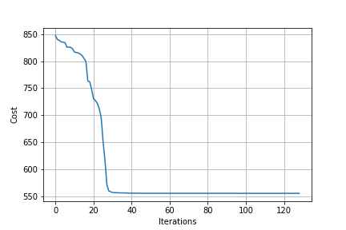

I got frustrated with not being able to go farther with using autodiff for my simple toy linear regression model, so I decided it was time to actually try training a toy neural network for the first time.
For this, I followed Stephen Welch’s excellent Neural Networks Demystified series. I had actually encountered the series a few years ago, which I recall gave me my initial intuitive understanding of neural networks, but I was not at all into math at that time and did not think I could grok the relevant code.
The tutorial is pretty short and the end result is not that exciting—at least for me, anyway. So I knew I wouldn’t get much out of writing a post solely about the tutorial.
However, in Video #4, he breezes through backpropagation—the heart of neural networks—and while the tutorial gives enough of an understanding of the math to build similar neural networks to the ones in the video, with one hidden layer, I wanted to see if there was a tidy way to generalize his code to an arbitrary number of hidden layers.
So that’s what this post will be about, although it does skip a few intermediate steps from the last linear regression post, math-wise.
Forward propagation
Linear regression on steroids
Before you can do backpropagation, you need to do forward propagation. That is, you feed your inputs forward through each successive layer of the network until you get to the last layer, which is your output.
In the toy linear regression model from before, this was the process of getting an estimate \(\hat y\) by initially setting the weights vector \(\vec \theta\) to all zeros (or random values), and multiplying it by the input. The weights vector would then be updated and the input would be fed forward again on every iteration of gradient descent.
In a neural network, it’s basically the same, just more complex. The linear regression model consisted of \(j\) features contributing to one output; a neural network, meanwhile could have arbitrary layers of an arbitrary number of features.
What was a single weights vector \(\vec \theta\) is now one of several weights matrices \(\textbf w\). Erik Hallström’s post has some pretty clear graphics to illustrate:

The \(j\)th row of the matrix is the weights (influence) of the six neurons (features) of the preceding layer on the \(j\)th neuron (feature) of the next layer.
Forward propagation is simply multiplying your input matrix by the first weight matrix, applying an activation function to the result. This result is the next input, which you multiply by the next weight matrix, and so on.
Sigmoid (sounds like steroid, but isn’t)
Here, we are going to use the sigmoid function, \(\sigma(z)\), as our activation function. This is pretty standard in basic neural network implementations.
$$ \sigma(z) = \frac{1}{1 + e^{-z}} $$
Or, in Python:
import numpy as np
def sigmoid(z):
return 1 / (1 + np.exp(-z))

Neat.
Mathing it out
So then, given an input matrix \(\textbf X\), this is what a basic forward propagation sequence looks like:
$$ \begin{aligned}
\textbf z_1 &:= \textbf X \textbf w_0 &\to \textbf a_1 &:= \sigma(\textbf z_1) \\
& & \textbf z_2 &:= \textbf a_1 \textbf w_1 &\to \textbf a_2 &:= \sigma(\textbf z_2) \\
& & & & \hat y &:= \textbf a_2
\end{aligned} $$
where \(\textbf z_n\) are the “uncooked” products of inputs and weights at layer \(n\) and \(\textbf a_n\) are the “cooked” versions (activated values) of those products.
You could write this as a single nested function, but like a programming one-liner, it’s unreadable. I have chosen to write it this way to highlight its recursive nature (ahem reduce ahem).
Implementing it recursively
If we conceive of our network’s weights matrices as a list of matrices w \(= [\textbf w_0, \textbf w_1, \cdots, \textbf w_{k-2}]\) where \(k\) is the number of layers in our network, we can then use w[0] to refer to the weights between layers 0 and 1, and so on.
(Notation such as \(W_{jk}\) is common, but I’m using a single index to reduce clutter.)
With that in mind, let’s rewrite class NeuralNetwork to take a list of layer dimensions, such that
we can recreate the Welch Labs 2-3-1 network with the list [2,3,1] and 3blue1brown’s number-recognition network with the list [784,16,16,10].
class NeuralNetwork(object):
def __init__(self, layer_dims):
self.layer_dims = layer_dims
# Initialize n-1 matrices containing random weights
# Weight matrices must have rows like the prev layer
# and columns like the next layer (otherwise you must transpose)
self.w = [np.random.rand(self.layer_dims[i],
self.layer_dims[i + 1])
for i in range(len(self.layer_dims) - 1)]
class NeuralNetwork(object):
def __init__(self):
# Hyperparameters
self.input_layer_size = 2
self.hidden_layer_size = 3
self.output_layer_size = 1
# Weights
self.W1 = np.random.randn(self.input_layer_size, self.hidden_layer_size)
self.W2 = np.random.randn(self.hidden_layer_size, self.output_layer_size)
With this flexible setup, forward propagation is just a matter of reduce, as I alluded to above:
from functools import reduce
class NeuralNetwork(object):
...
def forward(self, X):
y_hat = reduce(lambda prv, nex: prv @ nex, self.w, initial_input)
class NeuralNetwork(object):
...
def forward(self, X):
self.z2 = X @ self.W1
self.a2 = sigmoid(self.z2)
self.z3 = self.a2 @ self.W2
y_hat = sigmoid(self.z3)
return y_hat
Look how concise that is!
However, thinking ahead, we will need to keep the intermediate values for when we do backpropagation, so let’s flesh this out a bit.
Similar to our w list, we should instantiate an a list \(= [\textbf a_0, \textbf a_1, \cdots, \textbf a_k]\) and a z list \(= [\textbf z_0, \textbf z_1, \cdots, \textbf z_k]\) when we run the function.
To make bookkeeping a little easier, let’s add the necessary padding so that z[n] and a[n] refer to \(\textbf z\) and \(\textbf a\) at layer \(n\) (starting from zero). There is no “uncooked” input, so z[n] = None.
Meanwhile a[0] is technically the initial input matrix and a[n] is the output \(\hat y\).
Testing it out
class NeuralNetwork(object):
...
def activate(self, inputs, weights):
z = inputs @ weights
self.z.append(z)
a = sigmoid(z)
self.a.append(a)
return a
def forward(self, initial_input):
self.a = [initial_input] # consider X as a_0
self.z = [None] # keep the indexes of z and a aligned
y_hat = reduce(self.activate, self.w, initial_input)
return y_hat
You can test this out with the Welch Labs toy data:
X = np.array(([3,5],[5,1],[10,2]), dtype=float)
y = np.array(([75],[82],[93]), dtype=float)
# normalize data
X = X/np.amax(X, axis=0)
y = y/100
NN = NeuralNetwork([2,3,1])
NN.forward(X)
array([[0.58313228],
[0.5781811 ],
[0.59692924]])
The code works!
Backpropagation
Now that we’ve fed our input forward through the network, we now need to take its output and propagate the error (discrepancy between the output and truth) backward through the network, to figure out how much to adjust the weights by.
This is where the calculus becomes quite messy compared to the toy linear regression model. Each successive layer in the network introduces a new layer of functions that must be chain-ruled through in order to differentiate.
I am not really the best candidate to explain the nitty-gritty details of backpropagation. What follows will be mainly my notes, which were enough to help me understand how to generalize the code to any number of layers.
Sigmoid Prime (brother of Modulus Prime)
If, as a high school student, I had known advanced math would turn into a cast of Transformers characters, I might have stuck with it 😂
Anyway, before we go further, we have to define \(\sigma'(z)\), the derivative of our sigmoid function.
$$ \sigma'(z) = \frac{e^{-z}}{(1 + e^{-z})^2} $$
def sigmoid_prime(z):
return np.exp(-z) / ((1 + np.exp(-z)) ** 2)

Nice.
\(\frac{\partial \textbf J}{\partial \textbf w}\) on the turntable… or something
In the toy linear regression model, gradient descent required finding \(\frac{\partial J}{\partial \theta}\). In our neural network, gradient descent is going to require finding \(\frac{\partial \textbf J}{\partial \textbf w}\) for all \(\textbf w\) in our list w.
The tricky thing is that because the neural network is essentially functions layered on top of each other, the farther you go back toward the beginning of the network, the more complicated the derivatives become.
You could think of this in the following way: Values farther toward the beginning of the network have a subtler effect on the final output, while values farther toward the output have a more direct effect on the final output, despite the fact that we cannot manipulate them directly.
Here are the equations from the Welch Labs example, with the indices adjusted to reflect our zero-based setup.
$$ \begin{aligned}
\textrm{error} &= (\hat y - y) \\
\delta_2 &= (\hat y - y) \sigma'(\textbf z_2) &\to
\frac{\partial \textbf J}{\partial \textbf w_1} &= \textbf a_2^T \delta_2 \\[0.8em]
\delta_1 &= \delta_2 \textbf w_1^T \sigma'(\textbf z_1) &\to
\frac{\partial \textbf J}{\partial \textbf w_0} &= \textbf X^T \delta_1
\end{aligned} $$
Small delta \(\delta\) (also a matrix), is referred to as the error signal. \(\delta_n\) indicates how much the output changes when \(\textbf z_n\), the “uncooked” values of layer \(n\), change.
My main question here was: Given that these two gradients are not exactly the same, what would they look like in a neural network with more layers?
Chain rule forever and ever and ever and…
This looks really scary, but it was the only way I could figure out the pattern.
Suppose we have a neural network with four layers (like the 3blue1brown network).
$$ \begin{aligned}
\frac{\partial \textbf J}{\partial \textbf w_2} &=
\textcolor{#1f77b4}{(\hat y - y) \frac{\partial \hat y (=\textbf a_3)}{\partial \textbf z_3}}
\frac{\partial \textbf z_3}{\partial \textbf w_2} \\[0.8em]
&= \textcolor{#1f77b4}{\overbrace{(\hat y - y) \sigma'(\textbf z_3)}^{\delta_3}}
\frac{\partial \textbf z_3}{\partial \textbf w_2} \\[0.8em]
&= \textcolor{#1f77b4}{\delta_3} \frac{\partial \textbf z_3}{\partial \textbf w_2} \\[0.8em]
&= \textbf a_2^T \color{#1f77b4}{\delta_3} \\[1.2em]
\frac{\partial \textbf J}{\partial \textbf w_1} &=
\textcolor{#1f77b4}{(\hat y - y) \frac{\partial \textbf a_3}{\partial \textbf z_3}}
\textcolor{#e377c2}{\frac{\partial \textbf z_3}{\partial \textbf a_2}
\frac{\partial \textbf a_2}{\partial \textbf z_2}} \frac{\partial \textbf z_2}{\partial \textbf w_1} \\[0.8em]
&= \textcolor{#e377c2}{\overbrace{\textcolor{#1f77b4}{\overbrace{(\hat y - y) \sigma'(\textbf z_3)}^{\delta_3}} \frac{\partial \textbf z_3}{\partial \textbf a_2}
\sigma'(\textbf z_2)}^{\delta_2}} \frac{\partial \textbf z_2}{\partial \textbf w_1} \\[0.8em]
&= \textcolor{#e377c2}{\overbrace{\delta_3 \textbf w_2^T
\sigma'(\textbf z_2)}^{\delta_2}} \frac{\partial \textbf z_2}{\partial \textbf w_1} \\[0.8em]
&= \textcolor{#e377c2}{\delta_2} \frac{\partial \textbf z_2}{\partial \textbf w_1} \\[0.8em]
&= \textbf a_1^T \textcolor{#e377c2}{\delta_2} \\[1.2em]
\frac{\partial \textbf J}{\partial \textbf w_0} &=
\textcolor{#1f77b4}{(\hat y - y) \frac{\partial \textbf a_3}{\partial \textbf z_3}} \textcolor{#e377c2}{\frac{\partial \textbf z_3}{\partial \textbf a_2}
\frac{\partial \textbf a_2}{\partial \textbf z_2}} \textcolor{mediumpurple}{\frac{\partial \textbf z_2}{\partial \textbf a_1}
\frac{\partial \textbf a_1}{\partial \textbf z_1}} \frac{\partial \textbf z_1}{\partial \textbf w_0} \\[0.8em]
&= \textcolor{mediumpurple}{\overbrace{\textcolor{#e377c2}{\overbrace{\textcolor{#1f77b4}{\delta_3} \textbf w_2^T
\sigma'(\textbf z_2)}^{\delta_2}} \frac{\partial \textbf z_2}{\partial \textbf a_1}
\sigma'(\textbf z_1)}^{\delta_1}} \frac{\partial \textbf z_1}{\partial \textbf w_0} \\[0.8em]
&= \textcolor{mediumpurple}{\overbrace{\delta_2 \textbf w_1^T
\sigma'(\textbf z_1)}^{\delta_1}} \frac{\partial \textbf z_1}{\partial \textbf w_0} \\[0.8em]
&= \textcolor{mediumpurple}{\delta_1} \frac{\partial \textbf z_1}{\partial \textbf w_0} \\[0.8em]
&= \textbf a_0^T \textcolor{mediumpurple}{\delta_1} = \textbf X^T \textcolor{mediumpurple}{\delta_1}
\end{aligned} $$
This reveals a few generalities.
-
\(\frac{\partial \textbf a_n}{\partial \textbf z_n}\), or how much the “cooked” values of a layer change in relation to the “uncooked” values, is simply the derivative of the sigmoid function, since going from “uncooked” to “cooked” only involved the sigmoid function.
$$ \frac{\partial \textbf a_n}{\partial \textbf z_n} = \sigma'(\textbf z_n) $$ -
\(\frac{\partial \textbf z_{n+1}}{\partial \textbf a_n}\), or how much a layer’s “cooked” values change the “uncooked” values of the next layer, is simply the weights between the two layers. Makes sense, right? The weights matrix does have to be transposed for the multiplication to work, though.
$$ \frac{\partial \textbf z_{n+1}}{\partial \textbf a_n} = \textbf w_n^T $$ -
The first error signal, \(\textcolor{#1f77b4}{\delta_3}\), is different, but after that, you can find the error signal of any layer, \(\delta_n\), by piling on more of the above two partial derivatives:
$$ \delta_n = \delta_{n+1} \frac{\partial \textbf z_{n+1}}{\partial \textbf a_n} \frac{\partial \textbf a_n}{\partial \textbf z_n} = \delta_{n+1} \textbf w_n^T \sigma'(\textbf z_n) $$ -
Finally, if we save all the error signals in a list
deltas\(= [\delta_k-1, \delta_2, \cdots, \delta_1]\) (note that this will be the same length asw, one shorter thana, andz), then obtaining \(\frac{\partial \textbf J}{\partial \textbf w_n}\) is just a matter of reversingdeltasandzipping it withw.
Recursion to the rescue
In the four-layer example, deltas[0] \(= \textcolor{#1f77b4}{\delta_3}\), so we can start off defining
def backward(self, X, y):
initial_error = self.forward(X) - y
deltas = [initial_error * sigmoid_prime(self.z[-1])]
From there, we need to walk backwards through the lists w and z, starting from the second-to-last value of each, to get the values we need.
Since we are reusing the newest \(\delta_n\) result (i.e., deltas[-1]) in each iteration, the loop goes roughly like this:
for i in range(?):
delta = (deltas[-1] @ self.w[?].T) * sigmoid_prime(self.z[?])
deltas.append(delta)
Finally, once we have populated deltas, then populating a list djdw of all \(\frac{\partial \textbf J}{\partial \textbf w_n}\) can be done in one line:
djdw = [(a.T @ d) for a, d in zip(self.a, reversed(deltas))]
This works out perfectly, because
a[0]is the input \(\textbf X\), and- even though
ais one longer thandeltas,a[-1]is not used in these calculations and sozip()will disregard it.
djdw thus contains \([\textbf X^T \delta_1, \textbf a_1^T \delta_2, \textbf a_2^T \delta_3] = [\frac{\partial \textbf J}{\partial \textbf w_0}, \frac{\partial \textbf J}{\partial \textbf w_1}, \frac{\partial \textbf J}{\partial \textbf w_2}]\).
That gives us our final backpropagation function. I’ve condensed it a little here just to highlight the comparison with the hard-coded version, but the full version with comments is posted at the bottom.
class NeuralNetwork(object):
...
def backward(self, X, y):
initial_error = self.forward(X) - y
deltas = [initial_error * sigmoid_prime(self.z[-1])]
ll = len(self.layer_dims)
for i in range(2, ll):
delta = (deltas[-1] @ self.w[ll - i].T) * sigmoid_prime(self.z[ll - i])
deltas.append(delta)
return [(a.T @ d) for a, d in zip(self.a, reversed(deltas))]
def gradient(self, X, y):
return np.concatenate([djdw.ravel() for djdw in NN.backward(X, y)])
class NeuralNetwork(object):
...
def cost_prime(self, X, y):
self.y_hat = self.forward(X)
delta3 = -(y - self.y_hat) * sigmoid_prime(self.z3)
self.delta3 = delta3
dJdW2 = self.a2.T @ delta3
delta2 = (delta3 @ self.W2.T) * sigmoid_prime(self.z2)
dJdW1 = X.T @ delta2
return dJdW1, dJdW2
def gradient(self, X, y):
dJdW1, dJdW2 = self.cost_prime(X, y)
return np.concatenate((dJdW1.ravel(), dJdW2.ravel()))
Nice and compact!
Testing it out
Let’s generate a random dataset and network similar to the 3blue1brown one. That is, there should be input layer with 784 neurons, followed by 2 hidden layers and 1 output layer. His network is [784, 16, 16, 10] but why not spice things up a bit and change the numbers around a little?
import sklearn.datasets
X, y = sklearn.datasets.make_regression(n_samples=500, n_features=784)
y = np.vstack(y)
NN = NeuralNetwork([784, 32, 20, 16])
len(NN.gradient(X, y)) # 26048
Awesome! It works. And there are a whopping 26,048 weights in this behemoth neural network. Wow.
With some minor adjustments to the get_params and set_params methods in the original class, we should be able to drop this right into the Welch Labs Trainer as-is.
class NeuralNetwork(object):
...
def get_params(self):
return np.concatenate([weight.ravel() for weight in self.w])
def set_params(self, params):
for i in range(len(self.layer_dims) - 1):
num_weights = self.layer_dims[i] * self.layer_dims[i + 1]
self.w[i] = np.reshape(params[:num_weights],
(self.layer_dims[i], self.layer_dims[i + 1]))
params = params[num_weights:]
class NeuralNetwork(object):
...
def get_params(self):
#Get W1 and W2 unrolled into vector:
params = np.concatenate((self.W1.ravel(), self.W2.ravel()))
return params
def set_params(self, params):
#Set W1 and W2 using single paramater vector.
W1_start = 0
W1_end = self.hidden_layer_size * self.input_layer_size
self.W1 = np.reshape(params[W1_start:W1_end], (self.input_layer_size , self.hidden_layer_size))
W2_end = W1_end + self.hidden_layer_size*self.output_layer_size
self.W2 = np.reshape(params[W1_end:W2_end], (self.hidden_layer_size, self.output_layer_size))
Let’s train it (See Trainer tab in “Summary” below.)!
Well, being a newbie at this, it wasn’t quite so obvious to me, but it wasn’t feasible to train such a gigantic neural network with non-industrial-strength tools. Even with smaller networks, unnormalized data easily caused overflow errors.
This post is already quite long and complicated, and I don’t want to stray from the topic of backpropagation by getting into numerical stability, so I decided to pare things down a bit instead.
Still, the following network has five layers, which is reasonably complex and a further test of the math involved.
X, y = sklearn.datasets.make_regression(n_samples=100, n_features=30)
y = np.vstack(y) / 100
NN = NeuralNetwork([30, 10, 15, 7, 6])
T = Trainer(NN)
T.train(X, y)

Hooray! It works.
Summary
import numpy as np
import sklearn.datasets
X, y = sklearn.datasets.make_regression(n_samples=100, n_features=30)
y = np.vstack(y) / 100
NN = NeuralNetwork([30, 10, 15, 7, 6])
T = Trainer(NN)
T.train(X, y)
def sigmoid(z):
return 1 / (1 + np.exp(-z))
def sigmoid_prime(z):
return np.exp(-z) / ((1 + np.exp(-z)) ** 2)
from functools import reduce
class NeuralNetwork(object):
def __init__(self, layer_dims):
self.layer_dims = layer_dims
self.w = [np.random.rand(self.layer_dims[i],
self.layer_dims[i + 1])
for i in range(len(self.layer_dims) - 1)]
def activate(self, inputs, weights):
z = inputs @ weights
self.z.append(z)
a = sigmoid(z)
self.a.append(a)
return a
def forward(self, initial_input):
self.a = [initial_input] # consider X as a_0
self.z = [None] # keep the indexes of z and a aligned
y_hat = reduce(self.activate, self.w, initial_input)
return y_hat
def backward(self, X, y):
initial_error = self.forward(X) - y
# Accumulate δ's in reverse order
deltas = [initial_error * sigmoid_prime(self.z[-1])]
ll = len(self.layer_dims)
for i in range(2, ll):
delta = (deltas[-1] @ self.w[ll - i].T) * sigmoid_prime(self.z[ll - i])
deltas.append(delta)
# get djdws by multiplying the transpose of each activation by each delta
# X.T @ δ_1, a_1.T @ δ_2, a_2.T @ δ_3... (note that deltas[0] is δ_1)
djdw = [(a.T @ d) for a, d in zip(self.a, reversed(deltas))]
return djdw
def gradient(self, X, y):
return np.concatenate([djdw.ravel() for djdw in NN.backward(X, y)])
def cost(self, X, y):
self.y_hat = self.forward(X)
J = 0.5 * np.sum((y - self.y_hat) ** 2)
return J
def get_params(self):
return np.concatenate([weight.ravel() for weight in self.w])
def set_params(self, params):
for i in range(len(self.layer_dims) - 1):
num_weights = self.layer_dims[i] * self.layer_dims[i + 1]
self.w[i] = np.reshape(params[:num_weights],
(self.layer_dims[i], self.layer_dims[i + 1]))
params = params[num_weights:]
from scipy import optimize
class Trainer(object): # unedited from Welch labs version
def __init__(self, N):
self.N = N
def cost_wrapper(self, params, X, y):
self.N.set_params(params)
cost = self.N.cost(X, y)
grad = self.N.gradient(X, y)
return cost, grad
def callback_f(self, params):
self.N.set_params(params)
self.J.append(self.N.cost(self.X, self.y))
def train(self, X, y):
self.X = X
self.y = y
self.J = []
params0 = self.N.get_params()
options = {'maxiter': 200, 'disp': True}
_res = optimize.minimize(self.cost_wrapper, params0, jac=True,
method='BFGS', args=(X, y), options=options, callback=self.callback_f)
References
- Neural Networks Demystified, Welch Labs
- Multi-Layer Neural Networks with Sigmoid Function— Deep Learning for Rookies (2), Nahua Kang